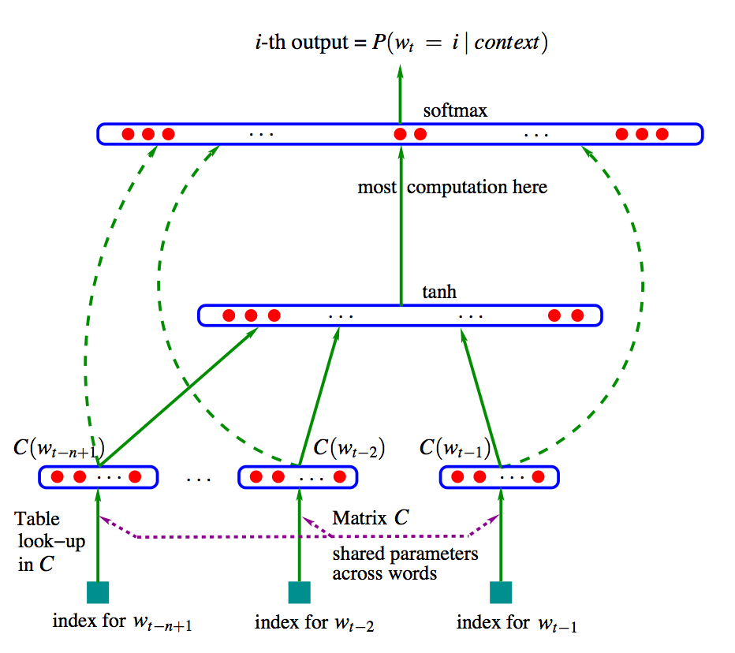
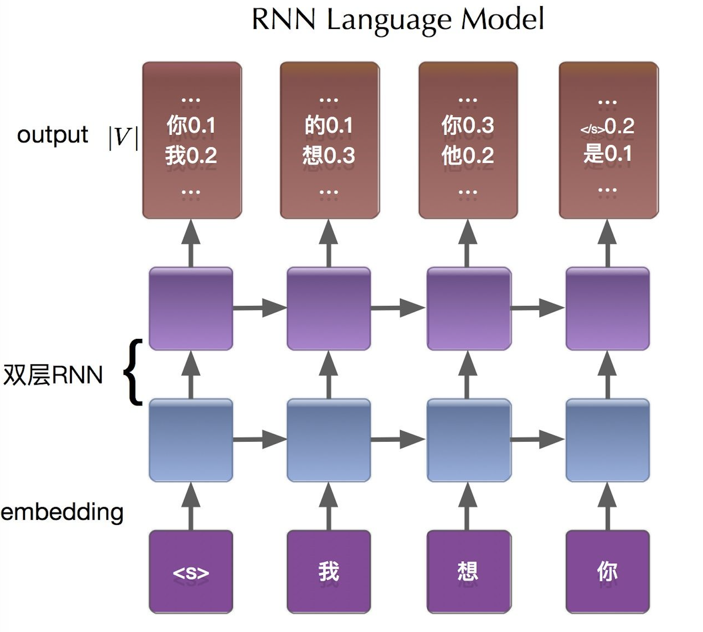

我们平时在与人交流的时候, 会根据我们想表达的意图(信息), 组织成一段话, 然后按顺序讲出来; 写文章的时候也是, 在构思好如何行文后, 一个字一个字地打出来.
在自然语言处理中, 语言模型(Language Model)的存在就是为了处理这么一件事情.
语言模型定义
通俗地来说, 语言模型的主要任务就是衡量, 给定一个语言序列, 判断其是否是一个正常的序列, 即是否属于”人话”, 例如:
标准的定义是, 对于语言序列$w_1, w_2,…,w_n$, 语言模型就是计算该序列的概率, 即$p(w_1, w_2,…,w_n)$.
从机器学习的角度来看, 语言模型就是对语言序列的概率分布进行建模.
统计语言模型
N-gram
由定义可知, 我们的目的是想得到$p(w_1, w_2,…,w_n)$, 那么利用条件概率的链式法则可以得到:
而其中的每一项, 在统计语言模型中, 可以采用极大似然来进行估计, 即:
这里的$C(\cdot)$表示子序列在语料库(训练集)中出现的频次. 同时, 在上式中由第一个等号到第二个等号的转换, 其实是有一定限制的, 这个后文会说到.
聪明的小伙伴肯定已经想到了, 对于任意长的语句, 根据极大似然直接计算$p(w_i|w_1, w_2,…,w_{i-1})$是不现实的, 本身复杂度极高, 而且依赖越长, 在有限的语料库下, 估计也越不准确.
为了解决这个问题, 引入了经典的马尔科夫假设(Markov assumption), 即假设当前词的出现概率, 仅仅依赖于最邻近的$n$个词, 于是可以将上面的条件概率进行简化:
基于上式, 当$n$取不同的值的时候, 可以得到对应的N-gram模型:
其中, 当$n>1$时, 为了使句首的条件概率有意义, 需要给原序列加上一个起始符, 如$<{\rm start}>$, 可以说起始符的作用就是为了表征句首词出现的条件概率.
同时, 一般来说也需要加上一个结束符, 如$<{\rm end}>$, 而结束符的作用又是什么呢? 我认为有两点: 一是让上面基于统计的极大似然估计等式成立, 如果不加结束符, 不能满足假设里面$p(w_1, w_2,…,w_n)$是所以可能序列的概率分布(所有可能的概率和为1); 二是在一些时候, 利用语言模型进行生成或者预测时, 当得到下一个字符为结束符时, 表明可以结束这句话.
平滑技术
在使用基于统计的语言模型时, 一个可能存在的问题, 就是会出现未登录词(OOV), 即在未来(或者测试集)出现了在语料库(或者训练集)中没有出现过的词(或词的组合), 而导致语言模型计算出的概率为零.
若是分子为零, 还好一些, 但是如果分母为零, 那就连一个概率也计算不出来.
为了缓解这种情况, 就出现了平衡技术. 具体的平衡技术有多种, 这里介绍简单的两种方法.
一种是Add-one Smoothing, 也叫做Laplace Smoothing. 举个栗子, 对于Bigram来说:
其中的$V$表示词库的大小.
另一种是Add-one Smoothing的升级版, Add-K Smoothing. 仍然举Bigram的栗子:
如果想选取合适的$k$, 则可以通过交叉验证的方式, 而评估的指标后文会进行介绍.
小结
基于统计的N-gram语言模型有如下特点:
- 优点:
- 采用极大似然, 参数容易训练($n$不是很大时).
- 完全包含了前$n$个词的信息.
- 可解释性强.
- 缺点:
- 缺乏长程依赖, $n$通常不能取较大.
- 随着$n$的增长, 参数空间指数增长.
- 难免会出现OOV的问题.
- 单词依赖统计频次, 泛化能力差.
神经网络语言模型
从基于统计的语言模型中可以看出, 其关键点在于估计$p(w_i|w_1, w_2,…,w_{i-1})$, 那么除了利用统计频次去估计以外, 还有没有其它的方式也能近似地去估计呢?
基于前馈神经网络
Bengio大神在2003年, 提出了如下图所示的前馈神经网络结构:

先给每一个词赋予一个词向量, 再通过神经网络去学习这种分布式的表示. 利用神经网络去学习当前词的出现概率与前$n$个词之间的关系.
显然这种方式相比N-gram具有更好的泛化能力, 只要词向量表示得好, 一定程度上降低了数据稀疏带来的问题.
但是其缺点是仍然仅包含了有限的前文信息, 且不易训练.
基于循环神经网络
Mikolov在2010年, 提出了强大的RNN模型, 揭开了自然语言处理的新篇章.
关于RNN的原理, 以及特点这里不做详细讲解. 将其作为语言模型来使用, 仍然举一个栗子来说明建模过程:

假设序列为我想你, 添加起始符和结束符后, 序列为$<{\rm start}>$ 我 想 你 $<{\rm end}>$. 按顺序将其作为网络的输入, 那么在输出层, 可以看做分别是在计算条件概率$p(w|<{\rm start}>)$, $p(w|<{\rm start}>\ 我)$, $p(w|<{\rm start}>\ 我\ 想)$, $p(w|<{\rm start}>\ 我\ 想\ 你)$. 而训练的目标, 就是使期望词对应的条件概率尽可能的大.
相比前馈神经网络, 具有隐状态$h_t$的传递, 使得RNN语言模型原则上可以捕捉前向序列的大部分信息(理想情况下).
小结
神经网络语言模型, 通过构建神经网络的方式, 来学习语言序列的内在规则与依赖关系. 相比基于统计的语言模型, 基于神经网络的语言模型有如下特点:
- 优点:
- 可以存着长距离依赖.
- 一定程度上缓解了OOV的问题.
- 好的词向量可以提高模型泛化能力.
- 缺点:
- 需要大量语料与计算资源进行训练.
- 可解释性差.
语言模型评价指标
在评估一个语言模型的好坏时, 一种直观的方法是, 在某个应用语言模型的具体任务上, 比较使用不同语言模型后的效果. 比如一些用到了语言模型的机器翻译, 语音识别等任务上进行比较.
而更加通用的评估指标, 是困惑度(Perplexity).
困惑度的定义与交叉熵有关, 交叉熵可以描述两个分布之间的差距, 在这里可以看成给定一句真实的语句, 希望语言模型给出的概率较大.
其中除以$N$是考虑到不同句子长度带来的影响.
于是困惑度的定义为:
由公式可以看成, 困惑度指标越小越好, 即语言模型不仅正确, 且”自信”.